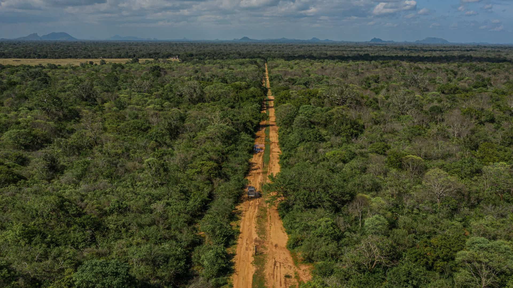

They are the Lords of the Jungle, and this is leopard country! While elephants roam in large numbers with wary deer scampering by their side, leopards, the most dangerous predators on the world, stroll magnificently in Yala, where their density is higher than anywhere else on Earth.
Yala National Park is a strict natural reserve consisting of a national park, which is divided into 5 blocks. The park area has a protected land area of almost 130,000 hectares of land which consists of light forests, scrubs, grasslands, tanks, and lagoons of which two blocks are open for public viewing. Yala is situated in the south - east of sri lanka and was designated a wildlife sacntuary in 1900, and then later dubbed a national park in 1938. The park was initally used as a hunting grounds when it was under british rule but ever since Yala is now one of Sri lankas must visit destinations. Home to 44 varaiaties of Mammals and 215 bird species, Yalas most famous residents are the worlds largest concentration of Leopards, elephants, sloth bears, sambars, jackals, spotted deers, peacocks and crocadiles. The best times considered to visit Yala would be between Febuary and July as the water levels are lower and this promts the wild life to emerge into the open.

